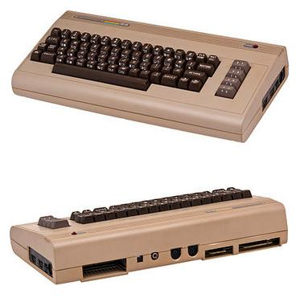

Dal tuo schizzo al taglio laser.
Imposta le quote, controlla i pezzi e scarica un SVG in millimetri.

Piano di taglio
Distinta pannelli
| Pezzo | Misura | Qtà |
|---|
Prima del taglio
Fai una prova living hinge e kerf sul tuo MDF prima del taglio definitivo.